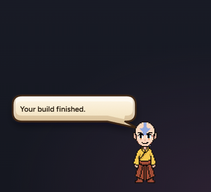
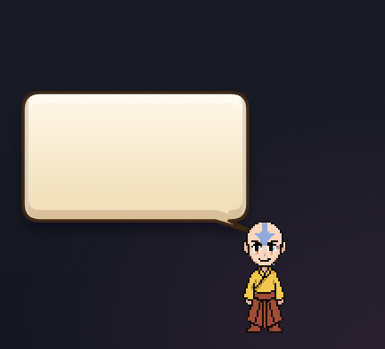
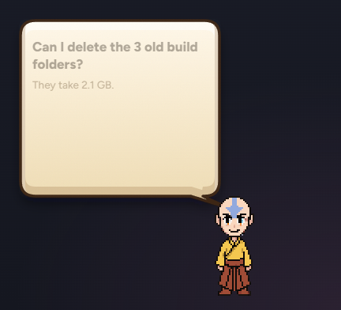
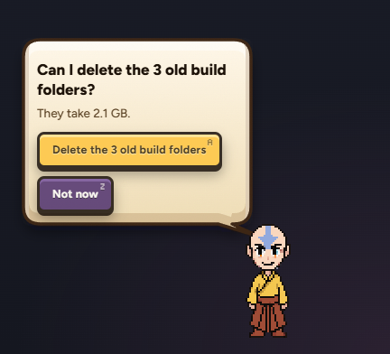
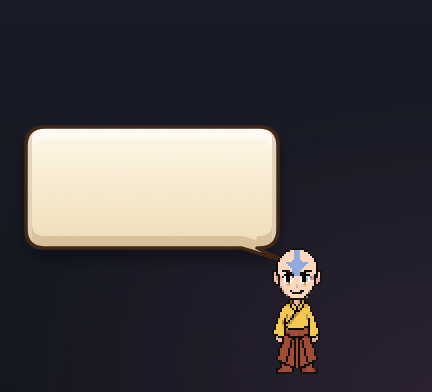
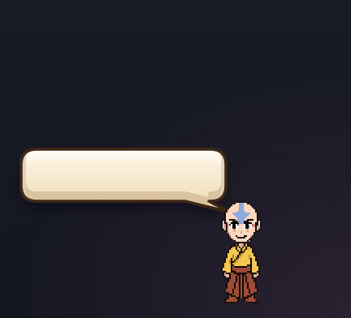

Back to one speech bubble coming off Aang's head. It grows for whatever he is saying, then shrinks back. The chat box is its own thing under him again.
One bubble, off his headGrows for what he saysShrinks back afterChat box on its ownLight paper, never a wood window
Every picture on this sheet is Aang's real bubble and real chat box, drawn by the app itself.
1THREE LOOKS FOR THE BUBBLE
Same bubble, three ways to dress it. Everything inside is the same in all three (your picks from sheets 48 to 51).
WHAT TO PICKA (my pick), B or C.
AT A GLANCE · the same line, three ways
ACOMIC BUBBLE
BWOOD RIM
CGAME DIALOGUE BOX
AComic bubble, cleaned upMY PICK
Today's bubble with lighter paper and a soft dark-wood edge. The calmest, and the easiest to read over a game.
aA ONE-LINER
bASKING YOU
cCLAUDE'S QUESTION
dA CLAUDE JOB
eMORNING BRIEF
fA VIDEO
BComic bubble with a wood rim
The same paper inside a thin rim of Samara's pixel wood, with gold studs. A touch of the Lantern, still a speech bubble. A little busier.
aA ONE-LINER
bASKING YOU
cCLAUDE'S QUESTION
dA CLAUDE JOB
eMORNING BRIEF
fA VIDEO
CGame dialogue box
Like Stardew or Ocarina: cream panel, chunky outline with a second line inside, and a name tab saying who is talking (AANG, CLAUDE · WAYMARK).
aA ONE-LINER
bASKING YOU
cCLAUDE'S QUESTION
dA CLAUDE JOB
eMORNING BRIEF
fA VIDEO
2HOW IT GROWS AND SHRINKS
One bubble. A line, then a question, then back to a line. These are the bubble's real frames, played at their real speed.
WHAT TO PICK Nothing. Say if it feels too slow or too bouncy.
Grows
In about half a second (520 ms), with a small bounce past the size and back.
Shrinks
Faster, about a third of a second (340 ms), no bounce.
Words come after
The shape moves first. The words fade in once it has started growing.
One after another
Who is talking, then the words, then the rest, then the keys, about 55 ms apart. New: today they all come in together.
Small changes
A few pixels (a line added) just glide, no bounce.

At rest

80 ms growing

280 ms a bit past the size

520 ms settled, keys in

80 ms shrinking

200 ms
Back to a line
3CLICKING AANG
A click on Aang opens just the chat box, beside him, as before the cockpit. His last line comes back above it only if he said it in the last 5 minutes, small, so you can answer it. Older talk: scroll over Aang, or ask him.
WHAT TO PICK Nothing. This is how you described it.
iNOTHING RECENT
iiHE SPOKE 2 MINUTES AGO
4WHERE CLAUDE JOBS LIVE
Your call: while a Claude job runs, Aang wears his little working mark (the amber bubble with three dots). Click it and his speech bubble grows with the jobs. Each job is folded; click one to open its tasks. Click anywhere else and it shrinks away. The mark stays until the jobs are done.
WHAT TO PICK Nothing. Your design, drawn for real.
1A JOB IS RUNNING
2CLICK THE MARK: ONE JOB
3TWO JOBS, ONE OPENED
4CLICK OUTSIDE
How these were made
The bubble, the chat box, the job bars, the brief and the video are the app's own pages, drawn off screen and photographed.
A look is a style laid on top of the real bubble. Nothing in the app was changed.
The working mark is drawn from the pet's own pixel map, the same pixels he paints over Aang's head.